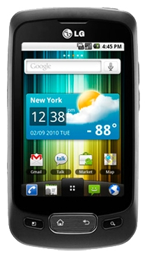
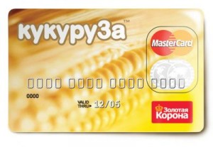
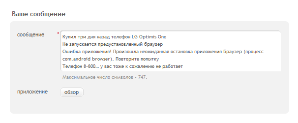

После наблюдения за научно-техническим прогрессом со стороны на протяжении последних лет пяти, поехал вчера и купил себе телефон LG P500 Optimus One.
К телефонам на андроиде и присматривался уже давно. Прогрессирующая в развитии платформа от симпатичной мне корпорации зла. Не обременена ошибками молодости как Windows Mobile и не отягощена запретами на использование телефона как хочется «айфоновский» IOS.
Немного предвзятое отношение к марке, (все-таки не привычная Nokia) тоже было отметено как не соответствующее здравому смыслу. Телефоны-то все равно почти все делаются в Китае да Корее, а операционка-то все равно как у всех.
Телефон оснащен предпоследней на данной момент версией Android 2.2 Froyo. Кроме самой ОС на телефоне есть всё. Сейчас уже конечно на большинстве смартфонов есть все, но LG Optimus One отличает еще и то, что стоит он 9990 рублей. Других подобных предложений на рынке нет. Продается в данный момент только в Евросети.
Особо хочется отметить продавца Федора из Евросети в «Лапландии», у него тоже такой телефон, он хороший человек, и его не ломает помочь покупателям больше чем написано в должностной инструкции.
При покупке мне, кстати, выдали рекламируемую Ксенией Собчак карту «Кукуруза», куда зачислили аж 100 с лишим рублей бонусов, которые я вероятно должен буду когда-то куда-то использовать.
Последний раз в «Евросети» я был лет 5 назад, поэтому пока 100 рублей останутся видимо незадействованными.
На телефоне сразу был настроен Wi-Fi и после подключения к домашней точке доступа появилась возможность прошерстить Андроид.Маркет на предмет бесплатного ПО и игр.
Первой игрой были установлены легендарные «Сердитые птицы» появившиеся когда-то еще на айфонах, а потом портированные на остальные платформы (на прошлой неделе даже на PC).
Был настроен почтовый клиент. Хотя уже года два как я пользуюсь гугловским web-интерфейсом, но посмотреть сипсок писем и написать короткий ответ с телефона удобнее все-таки в клиенте, а не браузере.
Еще установлены:
Alarm Clock Plus — замена стандартному будильнику
Battery Left — виджет для просмотра состояния баттареи
NetCounter — подсчет траффика переданного/полученного через WiFi и GPRS
PiBalance — виджет для просмотра остатка денег на телефоне
SpeedView — программа спидометр. Меряет скорость и пробег. При превышении скорости может играть какую-нибудь мелодию.
TweetDeck — клиент для твиттера, аналог которого есть у под Windows
WiFi Manager — управление беспроводными сетями
Клиент для Альфа-банка
Сканер штрих-кодов — читает QR-коды
несколько игр и Opera mini.
Предустановленный браузер сегодня вдруг отказался запускаться. Позвонил в LG, но по телефону 8-800-200-76-76, рекламируемому на оф.сайте русские представители корейцев другим русским помогать не хотят (после двух гудков звонок срывается). Написал письмо.

Телефон еще может работать в качестве точки доступа для ноутбука, т.е. необходимость в вставляемом сбоку модеме видимо будет отпадать. Правда мобильный интернет от МТС стоит 1,5 рубля, а на моем обычном тарифе на Мегафоне — 7 рублей за мегабайт, но мобильным интернетом на ноуте я пользуюсь не часто, поэтому попробую сколько будет тратится денег на деле.
На данный момент на все 9990 рублей доволен. Попробую что-нибудь мобильно потвиттить на неделе и мобильно с кем-нибудь поговорить
UPD: от LG получен ответ
Пройдите по директории Настройка - Приложения - Управление приложениями - Все - Браузер. В этом разделе удалите все доступные данные (кэш, историю, настройки), после чего нажмите "Остановить принудительно".